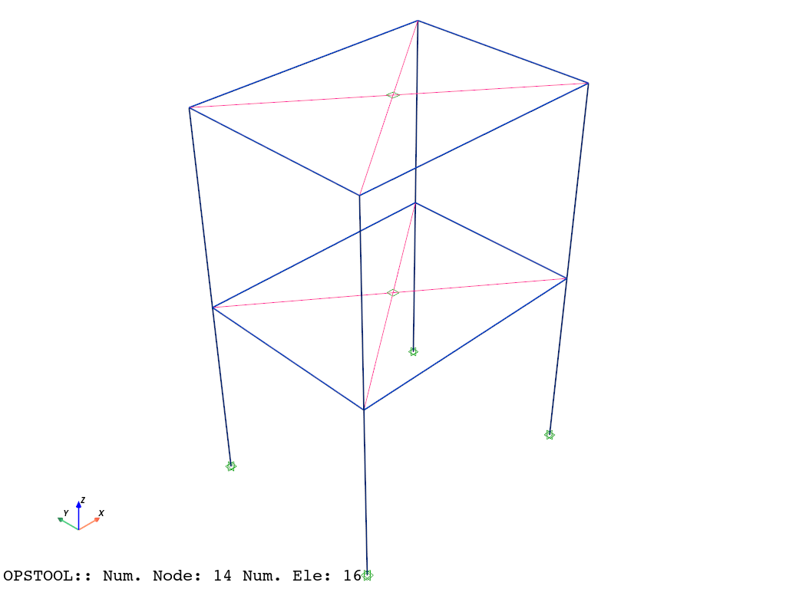
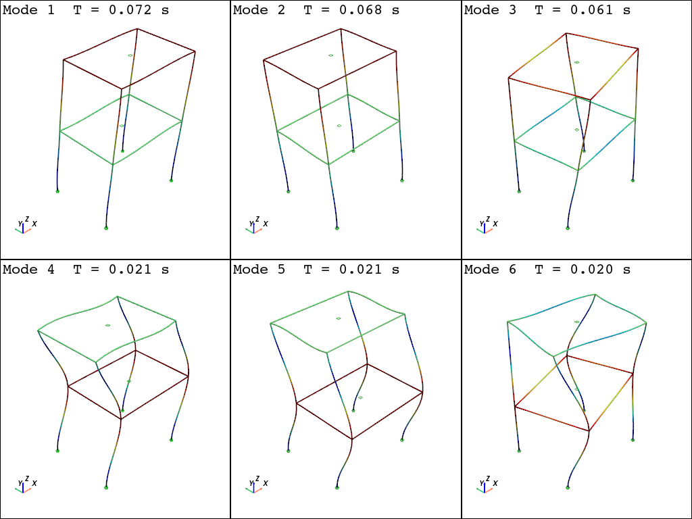

Response Spectrum Analysis¶
Sin v1.0.24 +
The following example show a simple 1-bay 2-story building with rigid diaphragms. Units are Newton and meters.
See responseSpectrumAnalysis Command
[1]:
import numpy as np
import openseespy.opensees as ops
import opstool as opst
Model¶
[2]:
ops.wipe()
# define a 3D model
ops.model("basic", "-ndm", 3, "-ndf", 6)
# the response spectrum function
Tn = [
0.0,
0.06,
0.1,
0.12,
0.18,
0.24,
0.3,
0.36,
0.4,
0.42,
0.48,
0.54,
0.6,
0.66,
0.72,
0.78,
0.84,
0.9,
0.96,
1.02,
1.08,
1.14,
1.2,
1.26,
1.32,
1.38,
1.44,
1.5,
1.56,
1.62,
1.68,
1.74,
1.8,
1.86,
1.92,
1.98,
2.04,
2.1,
2.16,
2.22,
2.28,
2.34,
2.4,
2.46,
2.52,
2.58,
2.64,
2.7,
2.76,
2.82,
2.88,
2.94,
3.0,
3.06,
3.12,
3.18,
3.24,
3.3,
3.36,
3.42,
3.48,
3.54,
3.6,
3.66,
3.72,
3.78,
3.84,
3.9,
3.96,
4.02,
4.08,
4.14,
4.2,
4.26,
4.32,
4.38,
4.44,
4.5,
4.56,
4.62,
4.68,
4.74,
4.8,
4.86,
4.92,
4.98,
5.04,
5.1,
5.16,
5.22,
5.28,
5.34,
5.4,
5.46,
5.52,
5.58,
5.64,
5.7,
5.76,
5.82,
5.88,
5.94,
6.0,
]
Sa = [
1.9612,
3.72628,
4.903,
4.903,
4.903,
4.903,
4.903,
4.903,
4.903,
4.6696172,
4.0861602,
3.6321424,
3.2683398,
2.971218,
2.7241068,
2.5142584,
2.3348086,
2.1788932,
2.0425898,
1.9229566,
1.8160712,
1.7199724,
1.6346602,
1.5562122,
1.485609,
1.4208894,
1.3620534,
1.3071398,
1.2571292,
1.211041,
1.166914,
1.1267094,
1.0894466,
1.054145,
1.0217852,
0.990406,
0.960988,
0.9335312,
0.9080356,
0.8835206,
0.8599862,
0.838413,
0.8168398,
0.7972278,
0.7785964,
0.759965,
0.7432948,
0.7266246,
0.710935,
0.6952454,
0.6805364,
0.666808,
0.6540602,
0.6285646,
0.6040496,
0.5814958,
0.5609032,
0.5403106,
0.5206986,
0.5030478,
0.485397,
0.4697074,
0.4540178,
0.4393088,
0.4255804,
0.411852,
0.3991042,
0.3863564,
0.3755698,
0.3638026,
0.353016,
0.34321,
0.333404,
0.3245786,
0.3157532,
0.3069278,
0.2981024,
0.2902576,
0.2833934,
0.2755486,
0.2686844,
0.2618202,
0.254956,
0.2490724,
0.2431888,
0.2373052,
0.2314216,
0.2265186,
0.220635,
0.215732,
0.210829,
0.205926,
0.2020036,
0.1971006,
0.1931782,
0.1892558,
0.1853334,
0.181411,
0.1774886,
0.1735662,
0.1706244,
0.166702,
0.1637602,
]
ops.timeSeries("Path", 1, "-time", *Tn, "-values", *Sa)
# a uniaxial material for transverse shear
ops.uniaxialMaterial("Elastic", 2, 938000000.0)
# the elastic beam section and aggregator
ops.section(
"Elastic",
1,
30000000000.0,
0.09,
0.0006749999999999999,
0.0006749999999999999,
12500000000.0,
0.0011407499999999994,
)
ops.section("Aggregator", 3, 2, "Vy", 2, "Vz", "-section", 1)
# nodes and masses
ops.node(1, 0, 0, 0)
ops.node(2, 0, 0, 3, "-mass", 200, 200, 200, 0, 0, 0)
ops.node(3, 4, 0, 3, "-mass", 200, 200, 200, 0, 0, 0)
ops.node(4, 4, 0, 0)
ops.node(5, 0, 0, 6, "-mass", 200, 200, 200, 0, 0, 0)
ops.node(6, 4, 0, 6, "-mass", 200, 200, 200, 0, 0, 0)
ops.node(7, 4, 3, 6, "-mass", 200, 200, 200, 0, 0, 0)
ops.node(8, 0, 3, 6, "-mass", 200, 200, 200, 0, 0, 0)
ops.node(9, 0, 3, 3, "-mass", 200, 200, 200, 0, 0, 0)
ops.node(10, 0, 3, 0)
ops.node(11, 4, 3, 3, "-mass", 200, 200, 200, 0, 0, 0)
ops.node(12, 4, 3, 0)
ops.node(13, 2, 1.5, 6)
ops.node(14, 2, 1.5, 3)
# beam elements
ops.beamIntegration("Lobatto", 1, 3, 5)
# beam_column_elements forceBeamColumn
# Geometric transformation command
ops.geomTransf("Linear", 1, 1.0, 0.0, -0.0)
ops.element("forceBeamColumn", 1, 1, 2, 1, 1)
# Geometric transformation command
ops.geomTransf("Linear", 2, 0.0, 0.0, 1.0)
ops.element("forceBeamColumn", 2, 2, 3, 2, 1)
# Geometric transformation command
ops.geomTransf("Linear", 3, 1.0, 0.0, -0.0)
ops.element("forceBeamColumn", 3, 4, 3, 3, 1)
# Geometric transformation command
ops.geomTransf("Linear", 4, 1.0, 0.0, -0.0)
ops.element("forceBeamColumn", 4, 2, 5, 4, 1)
# Geometric transformation command
ops.geomTransf("Linear", 5, 0.0, 0.0, 1.0)
ops.element("forceBeamColumn", 5, 5, 6, 5, 1)
# Geometric transformation command
ops.geomTransf("Linear", 6, 0.0, 0.0, 1.0)
ops.element("forceBeamColumn", 6, 7, 6, 6, 1)
# Geometric transformation command
ops.geomTransf("Linear", 7, 0.0, 0.0, 1.0)
ops.element("forceBeamColumn", 7, 8, 7, 7, 1)
# Geometric transformation command
ops.geomTransf("Linear", 8, 0.0, 0.0, 1.0)
ops.element("forceBeamColumn", 8, 9, 2, 8, 1)
# Geometric transformation command
ops.geomTransf("Linear", 9, 0.0, 0.0, 1.0)
ops.element("forceBeamColumn", 9, 8, 5, 9, 1)
# Geometric transformation command
ops.geomTransf("Linear", 10, 1.0, 0.0, -0.0)
ops.element("forceBeamColumn", 10, 10, 9, 10, 1)
# Geometric transformation command
ops.geomTransf("Linear", 11, 1.0, 0.0, -0.0)
ops.element("forceBeamColumn", 11, 3, 6, 11, 1)
# Geometric transformation command
ops.geomTransf("Linear", 12, 1.0, 0.0, -0.0)
ops.element("forceBeamColumn", 12, 11, 7, 12, 1)
# Geometric transformation command
ops.geomTransf("Linear", 13, 0.0, 0.0, 1.0)
ops.element("forceBeamColumn", 13, 11, 3, 13, 1)
# Geometric transformation command
ops.geomTransf("Linear", 14, 0.0, 0.0, 1.0)
ops.element("forceBeamColumn", 14, 9, 11, 14, 1)
# Geometric transformation command
ops.geomTransf("Linear", 15, 1.0, 0.0, -0.0)
ops.element("forceBeamColumn", 15, 12, 11, 15, 1)
# Geometric transformation command
ops.geomTransf("Linear", 16, 1.0, 0.0, -0.0)
ops.element("forceBeamColumn", 16, 9, 8, 16, 1)
# Constraints.sp fix
ops.fix(1, 1, 1, 1, 1, 1, 1)
ops.fix(10, 1, 1, 1, 1, 1, 1)
ops.fix(4, 1, 1, 1, 1, 1, 1)
ops.fix(12, 1, 1, 1, 1, 1, 1)
ops.fix(13, 0, 0, 1, 1, 1, 0)
ops.fix(14, 0, 0, 1, 1, 1, 0)
# Constraints.mp rigidDiaphragm
ops.rigidDiaphragm(3, 14, 2, 3, 9, 11)
ops.rigidDiaphragm(3, 13, 5, 6, 7, 8)
[3]:
opst.vis.pyvista.set_plot_props(notebook=True)
opst.vis.pyvista.plot_model().show(jupyter_backend="static")

[4]:
opst.vis.pyvista.plot_eigen(mode_tags=6, subplots=True, scale=2).show(jupyter_backend="static")
Using DomainModalProperties - Developed by: Massimo Petracca, Guido Camata, ASDEA Software Technology
OPSTOOL :: Eigen data has been saved to g:\opstool\docs\src\analysis\.opstool.output/EigenData-Auto.zarr!

Response Spectrum Analysis¶
[5]:
# define some analysis settings
ops.constraints("Transformation")
ops.numberer("RCM")
ops.system("UmfPack")
ops.test("NormUnbalance", 0.0001, 10)
ops.algorithm("Linear")
ops.integrator("LoadControl", 0.0)
ops.analysis("Static")
call the eigen Command to extract 7 modes of vibration
call the modalProperties Command to generate the report with modal properties
[6]:
# run the eigenvalue analysis with 7 modes
# and obtain the eigenvalues
eigs = ops.eigen("-genBandArpack", 7)
# currently we use same damping for each mode
dmp = [0.05] * len(eigs)
# we don't want to scale some modes...
scalf = [1.0] * len(eigs)
# compute the modal properties
modal_props = ops.modalProperties("-return", "-unorm")
Create ODB file to store results;
Peform response spectrum analysis
[7]:
direction = 1 # excited DOF = Ux
ODB = opst.post.CreateODB(
odb_tag="ResponseSpectrumAnalysis-UX",
section_response_dof={"SectionAggregator": ["P", "MZ", "MY", "T", "VY", "VZ"]},
)
for i in range(len(eigs)): # loop over modes
ops.responseSpectrumAnalysis(direction, "-Tn", *Tn, "-Sa", *Sa, "-mode", i + 1)
ODB.fetch_response_step()
# combine the responses by CQC
ODB.combine_response_spectrum(method="CQC", lambdas=eigs, damping=dmp, scale=scalf)
ODB.save_response()
Using ResponseSpectrumAnalysis - Developed by: Massimo Petracca, Guido Camata, ASDEA Software Technology
OPSTOOL :: All responses data with _odb_tag = ResponseSpectrumAnalysis-UX saved in g:\opstool\docs\src\analysis\.opstool.output/RespStepData-ResponseSpectrumAnalysis-UX.zarr!
Post-processing¶
The combined response is stored at time=0, and the responses of each modality correspond to time=1, 2,…
[8]:
ele_resp = opst.post.get_element_responses(odb_tag="ResponseSpectrumAnalysis-UX", ele_type="Frame")
print(ele_resp)
OPSTOOL :: Loading Frame response data from g:\opstool\docs\src\analysis\.opstool.output/RespStepData-ResponseSpectrumAnalysis-UX.zarr ...
<xarray.Dataset> Size: 57kB
Dimensions: (time: 8, eleTags: 16, basicDofs: 6, localDofs: 12,
secPoints: 5, secDofs: 6, locs: 4)
Coordinates:
* time (time) int64 64B 0 1 2 3 4 5 6 7
* eleTags (eleTags) int64 128B 1 2 3 4 5 6 ... 11 12 13 14 15 16
* basicDofs (basicDofs) <U3 72B 'N' 'MZ1' 'MZ2' 'MY1' 'MY2' 'T'
* localDofs (localDofs) <U3 144B 'FX1' 'FY1' 'FZ1' ... 'MY2' 'MZ2'
* secPoints (secPoints) int64 40B 1 2 3 4 5
* secDofs (secDofs) <U2 48B 'N' 'MZ' 'VY' 'MY' 'VZ' 'T'
* locs (locs) <U5 80B 'alpha' 'X' 'Y' 'Z'
Data variables:
basicDeformations (time, eleTags, basicDofs) float32 3kB 2.504e-06 ......
basicForces (time, eleTags, basicDofs) float32 3kB 2.254e+03 ......
localForces (time, eleTags, localDofs) float32 6kB 2.254e+03 ......
plasticDeformation (time, eleTags, basicDofs) float32 3kB 3.789e-21 ......
sectionForces (time, eleTags, secPoints, secDofs) float32 15kB 2.2...
sectionDeformations (time, eleTags, secPoints, secDofs) float32 15kB 8.3...
sectionLocs (time, eleTags, secPoints, locs) float32 10kB 0.0 .....
Attributes:
localDofs: local coord system dofs at end 1 and end 2
basicDofs: basic coord system dofs at end 1 and end 2
secPoints: section points No.
secDofs: section forces and deformations Dofs. Note that the section D...
Notes: Note that the deformations are displacements and rotations in...
[9]:
ele_resp["sectionForces"].sel(eleTags=1, secPoints=1, time=0) # first step means the combined response time=0
[9]:
<xarray.DataArray 'sectionForces' (secDofs: 6)> Size: 24B
array([2.2536040e+03, 3.5653046e-11, 1.9906316e-11, 2.8128005e+03,
1.4529568e+03, 7.0391839e-12], dtype=float32)
Coordinates:
* secDofs (secDofs) <U2 48B 'N' 'MZ' 'VY' 'MY' 'VZ' 'T'
eleTags int64 8B 1
secPoints int64 8B 1
time int64 8B 0[10]:
opst.vis.pyvista.set_plot_props(notebook=True, cmap="jet")
opst.vis.pyvista.plot_frame_responses(
odb_tag="ResponseSpectrumAnalysis-UX",
step=0, # first step means the combined response
resp_type="sectionForces",
resp_dof="MY",
scale=1.5,
).show(jupyter_backend="static")
OPSTOOL :: Loading response data from g:\opstool\docs\src\analysis\.opstool.output/RespStepData-ResponseSpectrumAnalysis-UX.zarr ...

[11]:
# opst.vis.pyvista.plot_frame_responses(
# odb_tag="ResponseSpectrumAnalysis-UX",
# step=0, # first step means the combined response
# resp_type="sectionForces",
# resp_dof="VZ",
# scale=1.5,
# ).show(jupyter_backend="static")